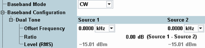
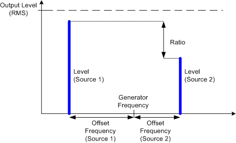

The generator signal is modified/modulated according to the selected "Baseband Configuration".

Defines the baseband settings for the RF generator. These settings define a possible modulation of the RF signal.
"CW" | The RF signal is a CW signal, i.e. a signal at constant frequency and level (RMS). No further signal settings are required. |
"Dual Tone" | The RF signal is a superposition of two CW signals with individual offset frequencies from the carrier and a definite power ratio. See "Dual Tone" parameters below. |
"ARB" | The RF signal is based on an arbitrary baseband signal defined by a waveform file (*.wv, ARB file). This mode is only offered if an ARB generator is available. Depending on the instrument model, the ARB generator is optional. For related settings, see "ARB Baseband Mode". |
This section provides parameters for the two generator signals "Source 1" and "Source 2". The two signals are superimposed at the selected output connector if the baseband mode "Dual Tone" is active.

Positive or negative offset frequency. The frequency of the modulated signal is equal to the generator frequency plus the "Offset Frequency".
Remote command:Ratio in dB between the RMS levels of the "Source 1" and "Source 2" signals (levelsource 1 – levelsource 2). The individual levels are calculated from the total generator level "Level (RMS)" and the ratio.
Remote command: